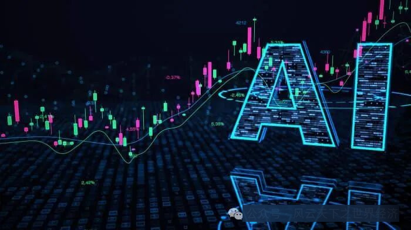
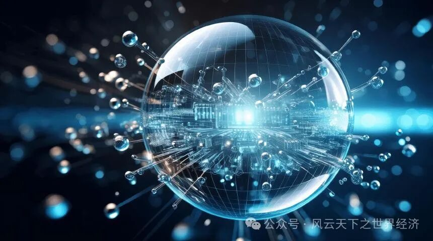

2024年6月14日，Nvidia创始人兼首席执行官黄仁勋受邀参加加州理工学院第130届毕业典礼，他用两个极为简单的问题就让整个现场陷入了一片欢腾：你们当中有多少人知道Nvidia? 你们当中有多少人知道GPU? 而台下毕业生们尖叫则是当下人们对AI浪潮狂热态度的生动写照。
就像是英国陶瓷之父乔赛亚·韦奇伍德、苏格兰商人帕特里克·科洪以及制造商兼慈善家罗伯特·欧文等商业人士率先感知到了工业革命的来临一样，最先意识到这一轮生成式人工智能是通往未来最近道路的，是站在本轮科技浪潮之巅的OpenAI的奥特曼，当然还有来自Nvidia黄仁勋。
为他们的行动提供燃料的则是华尔街的投资家们。

华尔街助推人工智能热潮
华尔街开始变得越来越像一个时尚的秀场，每当它嗅到一丝新的技术革新有可能会助推企业营收增长的气息时，便会很快动用巨量资金构筑出投资的“风口”。几年前在这里流行的关键词是ESG、低碳、可持续。但是，OpenAI聊天机器人在2022年11月的成功发布便引发了一波对生成式人工智能潜力的热捧，让AI这个不算太新的词汇瞬间充斥了各路投资人的工作场景。经济分析师和策略师开始讨论这项新技术对经济增长、通胀和大国博弈的潜在影响，而基金经理则开始思考这一切对于其资产组合的增值潜力。
追随者们认为该技术能够重塑世界，带来物质的极大丰富，甚至治愈绝症，同时还可以提升工人生产力，降低企业成本。自那之后，分析师一直在关注人工智能或将对企业营收带来的影响，尤其是对大型科技公司的影响，而那些有望因为新人工智能技术而获得相关营收的公司（例如微软（Microsoft）或英伟达（Nvidia））则见证了自家股价的飙升。与此同时，华尔街一直在源源不断地输出研究报告和调查，让人工智能概念变得热浪滚滚。
科技企业无疑为本轮AI热潮的第一波受益者。OpenAI在 2022 年 11 月推出 ChatGPT 之前，它的市值约为 3000 亿美元，与家居用品连锁店家得宝（Home Depot）的市值相近。如今，它的市值已达 23000 亿美元，与苹果公司的市值仅相差 5000 亿美元左右。微软也因为一笔原本不怎么起眼的投资，一举超越苹果而站上了全球企业市值之巅。黄仁勋的Nvidia的调整后每股收益（EPS）已经连续四个季度以三位数的百分比高速增长，在 2024 年第一财季，Nvidia 股价大涨 82.5%，成为S&P 500指数中表现第二好的公司。
他们是泡沫吗？2000年互联网泡沫的残存的气息仍然残存在上一代投资人的记忆中，它的出现也催生一批典型的词汇，如“动物精神”“非理性繁荣“。对大多数人来说，“泡沫经济”不是一个好词，它意味着狂热、缺乏理性的市场，当泡沫破裂时，总有一部分人会吞下失败的苦果。

人工智能是一场泡沫吗？
这一轮人工智能所带来的商业风潮是否会重蹈覆辙？
与大多数乐观者不同，华尓街顶级分析师、Yardeni研究机构总裁埃德·亚德尼（Ed Yardeni）警告称，人工智能股票存在泡沫，诸如英伟达（NVDA）首席执行官、OpenAI创始人萨姆-阿尔特曼（Sam Altman）等人工智能 "摇滚明星 "过度炒作了这项技术，助推人工智能股创下新高。亚德尼并非是唯一持有这一观点的投资专家。高盛（Goldman Sachs）全球股票研究主管吉姆-科维洛（Jim Covello）警告说，“投资者对人工智能股票的情绪可能转为负面，而且人工智能的经济效益被夸大了。”
当然，泡沫也并非意味着必然的悲剧结尾。一些资深华尔街分析师甚至十分推崇人工智能泡沫说，认为泡沫是必要的，不可避免的，甚至可能大有裨益，有助于那些真正具有颠覆性的技术获得更快的发展。投资公司DeepWater的执行合伙人吉恩·芒斯特在《人工智能泡沫守则》（The AI Bubble Playbook）里所阐述的观点颇具代表性：“泡沫可以确保新兴技术获得远超所需的资本，并让其脱颖而出的概率最大化。如果没有‘过量’的资本去追逐每一个糟糕的理念，尤其是这个糟糕的理念实际上颇为不俗时，我们可能就永远无法完全享受铁路、汽车或互联网带来的各种益处。”
泡沫终将破灭，但是就人工智能而言，这一天的到来还有很长的时间。当它不可避免地发生时，也并不意味着“人工智能”的丧钟正在敲响，就像当年持续至少五年时间才破灭的互联网泡沫也没有让互联网技术走向终结一样。